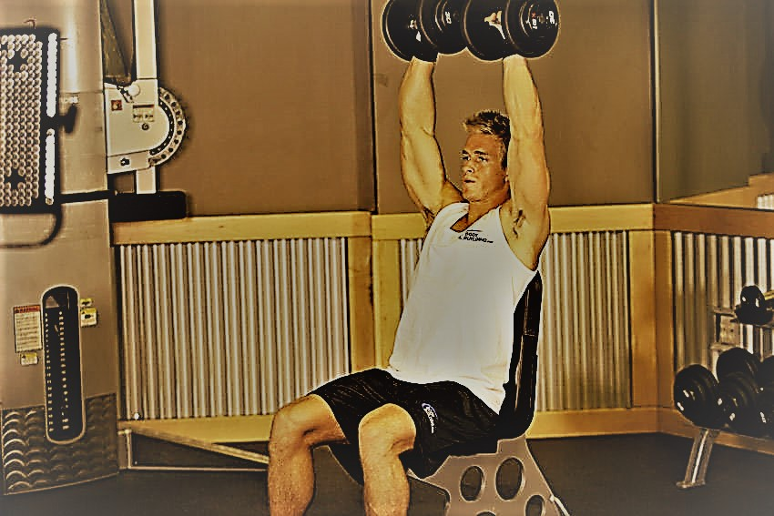
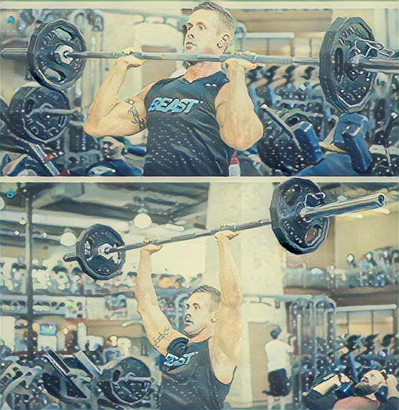
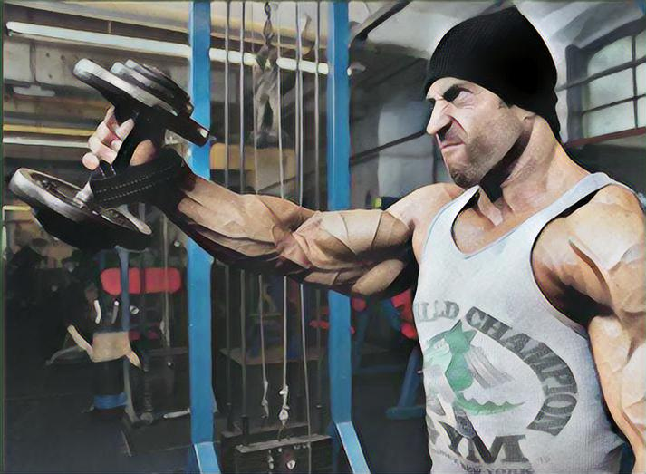
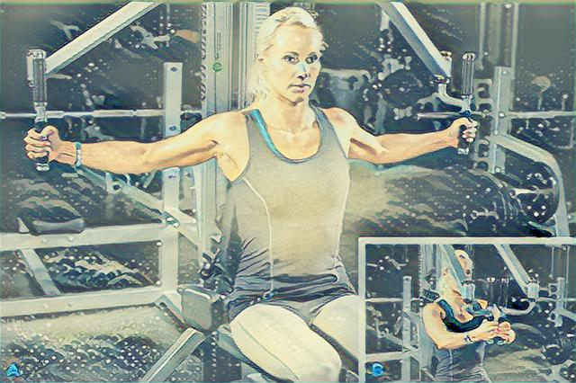
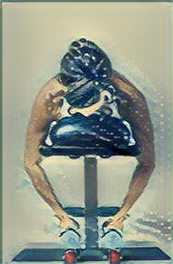

哑铃肩上推举〈Dumbbell Shoulder Press〉
哑铃肩上推举(Dumbbell Shoulder Press)能很好地增加肩部的围度，大重量可以使肩部力量和围度飞速增长。可以采用站姿或者坐姿，一般是采用坐姿，这样可以防止下肢和躯干借力。
动作要领： 1.坐在平凳上，双脚自然打开，双腿稳定住身体，臀部尽量向靠背上贴紧，腰部收紧不要贴住靠背，收腹挺胸，双手持铃握于头部两侧，双手握住哑铃中间的位置，从身体两侧举起，保持在大臂和小臂的夹角为90度，手心朝向正前方2.然后深吸气将哑铃分别从身体的两侧推起，拳眼相对，相交于头的正上方，但是不要将哑铃彼此触碰到，下落时吸气，反复进行练习。注意事项： 1.这个动作可以用站姿（如下），但相对来说，还是坐姿更稳定，而且避免下肢和躯干借力，对三角肌锻炼更有效。2.动作整个过程一般采用双手拳眼相对（即掌心向前，即本文主要解释的情况），如果双手拳眼朝前（即掌心相对，如下图），锻炼重心开始偏向三角肌前束，两种动作对三角肌前束和中束都有锻炼，只是比重大小的问题。3.中等或大重量时，肘关节一定不要伸直，容易受伤；腰部也开始在分担肩部的力量，因此最好带上腰带比较安全。 4.为了获得和杠铃推举不同的效果，可尽量将哑铃放低，然后两臂同时举起，这样做动作幅度更大。5.推举时如果推到最高点双臂完全伸直，而一旦肘关节完全伸直—锁住，三角肌就不怎么用力了，几乎完全靠骨骼支撑重量。如果在肘关节伸直前就停下来，开始下放哑铃，则练习效果会大大加强。
哑铃肩上推举(Dumbbell Shoulder Press)能很好地增加肩部的围度，大重量可以使肩部力量和围度飞速增长。可以采用站姿或者坐姿，一般是采用坐姿，这样可以防止下肢和躯干借力。
动作要领： 1.坐在平凳上，双脚自然打开，双腿稳定住身体，臀部尽量向靠背上贴紧，腰部收紧不要贴住靠背，收腹挺胸，双手持铃握于头部两侧，双手握住哑铃中间的位置，从身体两侧举起，保持在大臂和小臂的夹角为90度，手心朝向正前方2.然后深吸气将哑铃分别从身体的两侧推起，拳眼相对，相交于头的正上方，但是不要将哑铃彼此触碰到，下落时吸气，反复进行练习。注意事项： 1.这个动作可以用站姿（如下），但相对来说，还是坐姿更稳定，而且避免下肢和躯干借力，对三角肌锻炼更有效。2.动作整个过程一般采用双手拳眼相对（即掌心向前，即本文主要解释的情况），如果双手拳眼朝前（即掌心相对，如下图），锻炼重心开始偏向三角肌前束，两种动作对三角肌前束和中束都有锻炼，只是比重大小的问题。3.中等或大重量时，肘关节一定不要伸直，容易受伤；腰部也开始在分担肩部的力量，因此最好带上腰带比较安全。 4.为了获得和杠铃推举不同的效果，可尽量将哑铃放低，然后两臂同时举起，这样做动作幅度更大。5.推举时如果推到最高点双臂完全伸直，而一旦肘关节完全伸直—锁住，三角肌就不怎么用力了，几乎完全靠骨骼支撑重量。如果在肘关节伸直前就停下来，开始下放哑铃，则练习效果会大大加强。
直立杠铃上拉 目标锻炼部位：三角肌前束。 辅助肩侧斜方肌 注：宽握直立上拉和拉力器直立上拉主要锻炼三角肌前束与中束。 动作要领： 1、选择窄握（双手距离10－20厘米）或与肩同宽握。 2、膝盖微微弯曲，上身前倾5－10度。3、训练的整个过程保持杠铃杆靠紧你的身体－甚至能碰到你的T恤 4、把杠铃向上拉到锁骨部位，肘部尽可能的抬高。 5、向上拉起时吸气，重量下落时呼气。 6、当重量下落的时候不要放松和垂肩——肘部伸展到170－175度。 7、用腹肌30－40％的力量提前收紧腹部 注意事项： 1、关键是要用肩带肌群力量，带动双臂向上提起，同时上体不得前后摆动。 2、在整个过程中，要始终利用肩部肌群的力量 3、拉引时，肘部应尽量高台 4、不得借用上体前后摆动等助力。


坐姿杠铃推举 目标锻炼部位：主要三角肌前束。胸大肌锁骨|三角肌中束|斜方肌中|斜方肌下|前锯肌|肱三头肌，斜方肌上。 动作要领： 选一靠背椅，整个背面和靠背完全接触上，双肘自然分开，双手正握杠铃 背部挺直端坐，正手抓握杠铃置于上胸部。 吸气，将杠铃垂直向上推举，动作完成时呼气。肘部稍向前可加强对三角肌前部的锻炼，为使三角肌中部得到更多的锻炼，可外展肘部，健身肌和支架可以帮助练习者减少对身体姿势的关注，将精力集中于锻炼三角肌。 注意要点： 上举和下放杠铃时，身体不要摆动。该动作对上臂三头 肌也有较大锻炼作用。 如将杠铃下落到颈后肩上，则对三角肌后部有更大的锻炼作用，称为颈后推举。 胸前和颈后的推举，也可坐在凳上做。还可用哑铃，左右两臂同时作交替的上推和下落，如此做，则可在上推和下落时吸气，静止时呼气。。
杠铃颈后推举（Barbell Behind Neck press） 杠铃颈后推举是一项综合性肌肉练习，参与的肌肉包括肩和背，而且锻炼肩部肌肉几乎涉及前、中、后三束，由于杠铃重心落在肩部肌肉不同，每个人感觉可能不同，但一般来说他是主要针对中、后束三角肌，尤其有意识针对后束。该动作最好作为三角肌后束练习的补充动作较为合适，而不应作为主要练习。 动作要领 ： 1.最好采用坐姿，紧靠座椅，两手持铃置于颈后肩上，上体保持挺胸收腹紧腰的姿势。 2.随即吸气，持铃向上推起至头顶后上方两臂完全伸直为止，稍停2～3秒钟，再慢慢放下还原。 3.注意放下负重时尽可能向下，然后再开始重复。

哑铃直臂侧平举（Dumbbell Lateral Raise） 哑铃直臂侧平举主要健美三角肌中束部，有利增加两肩的宽度，对纠正溜肩、窄肩有特效。由于侧平举主要是冠状面水平外展所以对三角肌中束训练效果明显，前束和后束参与不多。 动作要领： 1.两脚开立、与肩同宽、自然站立，收腹挺胸，背部挺直，保持身体的稳定，双手抓握哑铃垂于身体两侧，肘微屈，拳眼向前。 2.两手持铃同时向两侧举起，举到上臂与地面平行即可，这样能保持三角肌持续紧张，而超过此位置哑铃重量不再落在三角肌肉上；然后慢慢地循原路落下回原位，再重复做。
坐姿夹胸（蝴蝶机夹胸） 动作描述：端坐在靠椅上，头部和上背部紧贴着背垫，两臂向后展开托在托垫上，以胸肌张紧力控制住。 然后，胸大肌收缩，使两臂向内夹紧，直至胸大肌处于“顶峰收缩”位。 稍停，再以胸大肌的张紧力控制位，慢慢使两臂向两侧展开还原。


俯卧侧平举（Lying Lateral Raise） 俯卧侧平举，也称俯卧飞鸟（Reverse Fly），它是一个综合锻炼动作，对于三角肌、斜方肌、肱三头肌同时起到塑形作用，尤其针对三角肌后束。 俯卧侧平举特点：固定环节更稳固（即腰腹和背完全不用再发力紧绷来稳定身体的躯干），锻炼环节（后肩）独立程度更大，三角肌其他两束借力更小，因此这个动作可以当成针对三角肌后束的孤立动作，适宜于中级以上练习者采用。